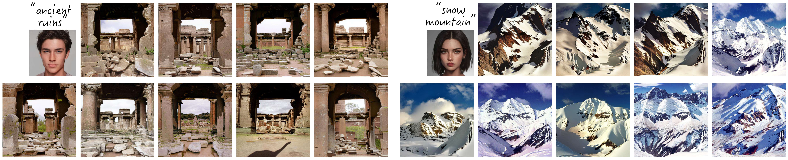
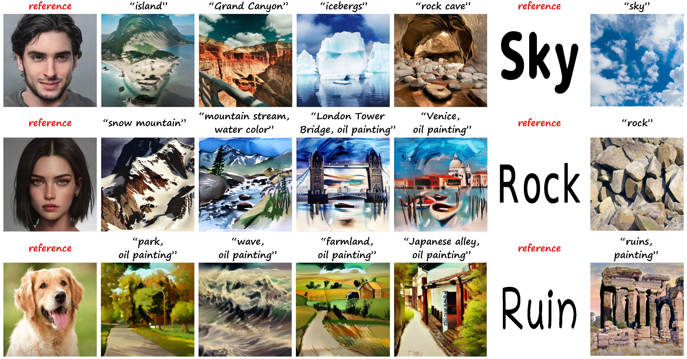
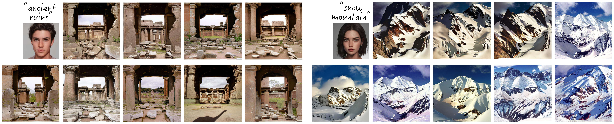
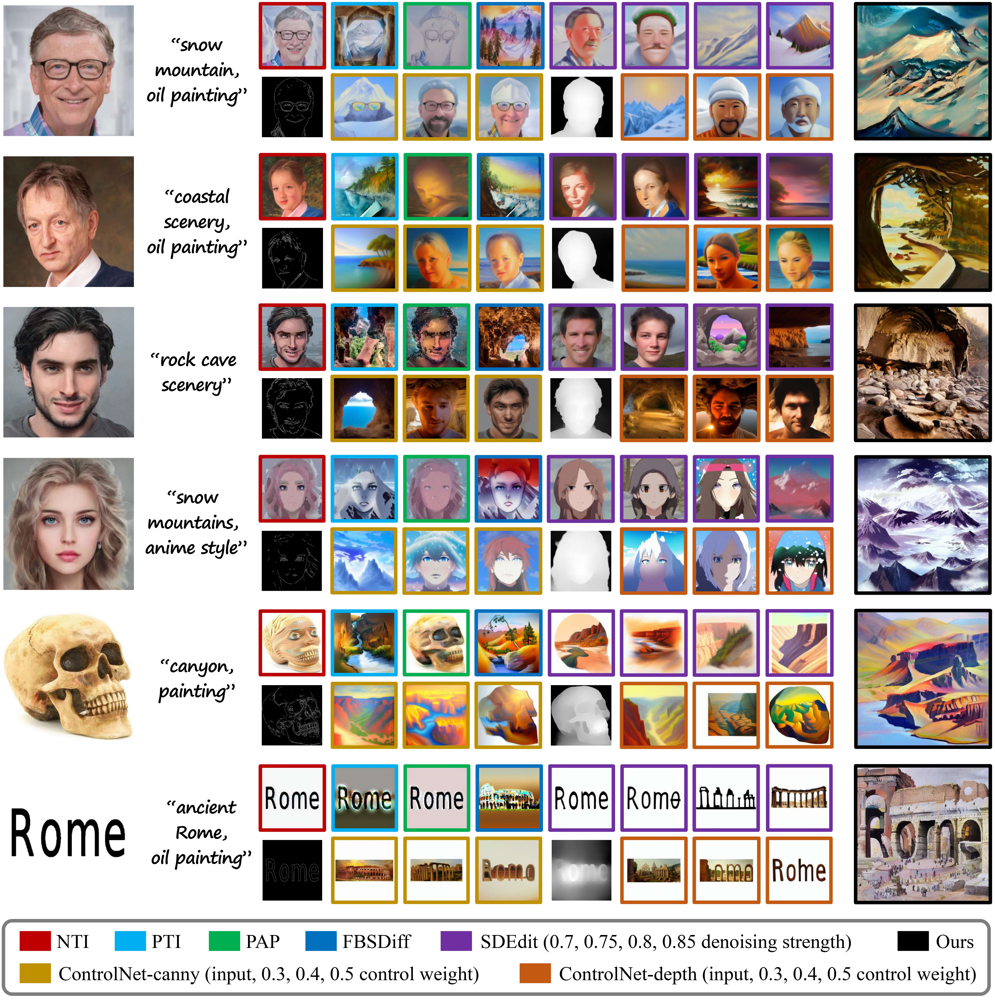
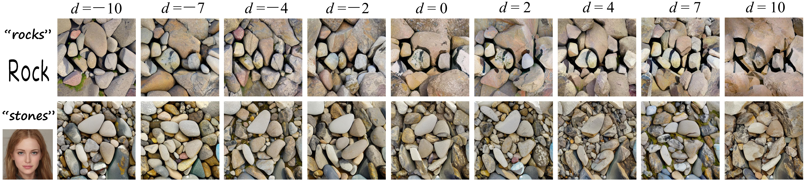

Our method allows to sample diverse illusion pictures with both fixed reference image and text prompt. Better viewed with zoom-in.
Diversified sampling results for generating artistic paintings.

Wangxuan Institute of Computer Technology, Peking University
{gaoxiang1102, williamyang, liujiaying}@pku.edu.cn
Taking the first image on the left as an example, what do you see at your first glance? A painting of a path through a forest (zoom in for a detailed look), or a human face (zoom out for a more global view)? Based on the off-the-shelf text-to-image diffusion model, we contribute a plug-and-play method that naturally dissolves a reference image (shown in the bottom-right corner) into arbitrary scenes described by a text prompt, providing a free lunch for synthesizing optical illusion hidden pictures using diffusion model. Better viewed with zoom-in.
Optical illusion hidden picture is an interesting visual perceptual phenomenon where an image is cleverly integrated into another picture in a way that is not immediately obvious to the viewer. Established on the off-the-shelf text-toimage (T2I) diffusion model, we propose a novel trainingfree text-guided image-to-image (I2I) translation framework dubbed as Phase-Transferred Diffusion Model (PTDiffusion) for hidden art syntheses. PTDiffusion embeds an input reference image into arbitrary scenes as described by the text prompts, while exhibiting hidden visual cues of the reference image. At the heart of our method is a plug-andplay phase transfer mechanism that dynamically and progressively transplants diffusion features’ phase spectrum from the denoising process to reconstruct the reference image into the one to sample the generated illusion image, realizing harmonious fusion of the reference structural information and the textual semantic information. Furthermore, we propose asynchronous phase transfer to enable flexible control to the degree of hidden content discernability. Our method bypasses any model training and fine-tuning, all while substantially outperforming related methods in image quality, text fidelity, visual discernibility, and contextual naturalness for illusion picture synthesis, as demonstrated by extensive qualitative and quantitative experiments.
(1) We pioneer generating optical illusion hidden pictures from the perspective of text-guided I2I translation.
(2) We propose a concise and elegant method that realizes deep fusion of image structure and text semantics via dynamic phase manipulation in the LDM feature space, producing contextually harmonious illusion pictures.
(3) We propose asynchronous phase transfer to enable flexible control over the degree of hidden image discernibility.
(4) Our method dispenses with any training and optimization process, providing a free lunch for synthesizing illusion pictures using off-the-shelf T2I diffusion model.
Below are showcased example results of our method in generating illusion pictures. Our method harmoniously dissolves a reference image into arbitrary scenes described by a text prompt. The produced results are both semantically faithful to the text prompt (zoom in for a detailed look) and structurally perceptible of the hidden reference image (zoom out for a more global view).
Our method allows to sample diverse illusion pictures with both fixed reference image and text prompt. Better viewed with zoom-in.
Diversified sampling results for generating artistic paintings.
Qualitative comparison to related text-guided I2I and controllable T2I methods on generating optical illusion hidden pictures. Our PTDiffusion is the only one among the compared methods that realizes harmonious structural-semantic blending, producing visually appealing illusion pictures manifesting both precise textual semantics and clearly discernible hidden content.
Qualitative ablation study of the kernel ingredients of our method.

Demonstration of the hidden content discernibility control of our method realized by varying the async distance parameter d in the asynchronous phase transfer module (APTM).
More examples of hidden content discernibility control of our method realized by varying the async distance parameter d.

Presentation of more illusion pictures generated by our method.


@inproceedings{gao2025ptdiffusion,
title={PTDiffusion: Free Lunch for Generating Optical Illusion Hidden Pictures with Phase-Transferred Diffusion Model},
author={Gao, Xiang and Yang, Shuai and Liu, Jiaying},
booktitle={Proceedings of the IEEE/CVF Conference on Computer Vision and Pattern Recognition},
year={2025}
}